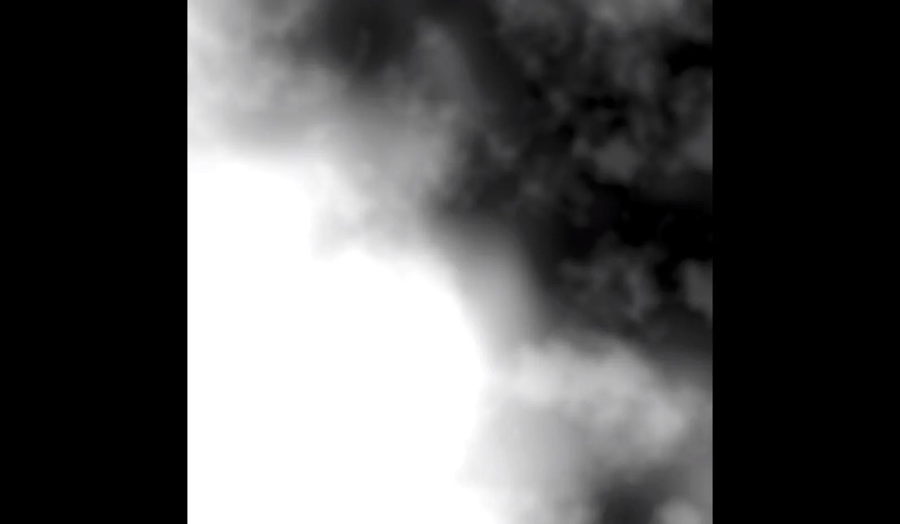
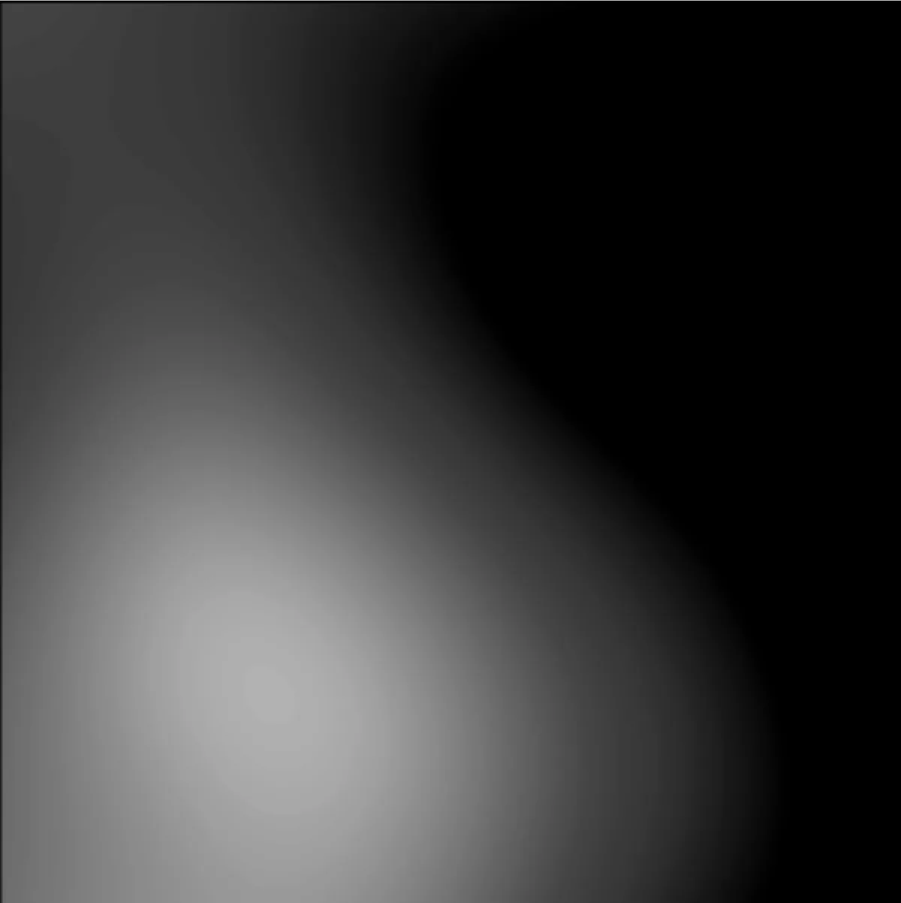
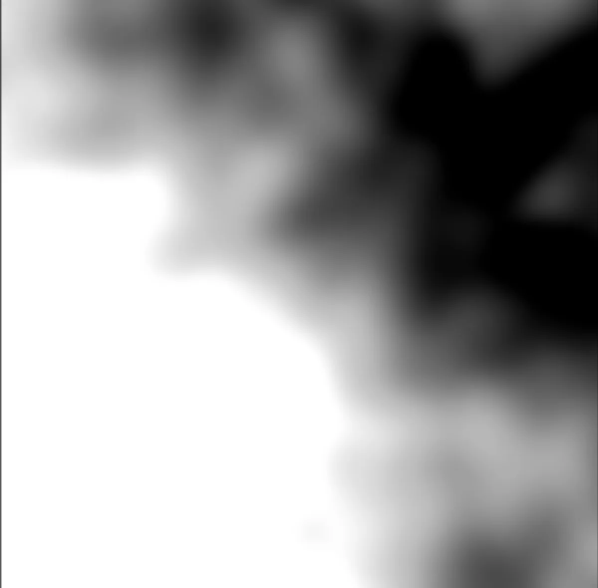
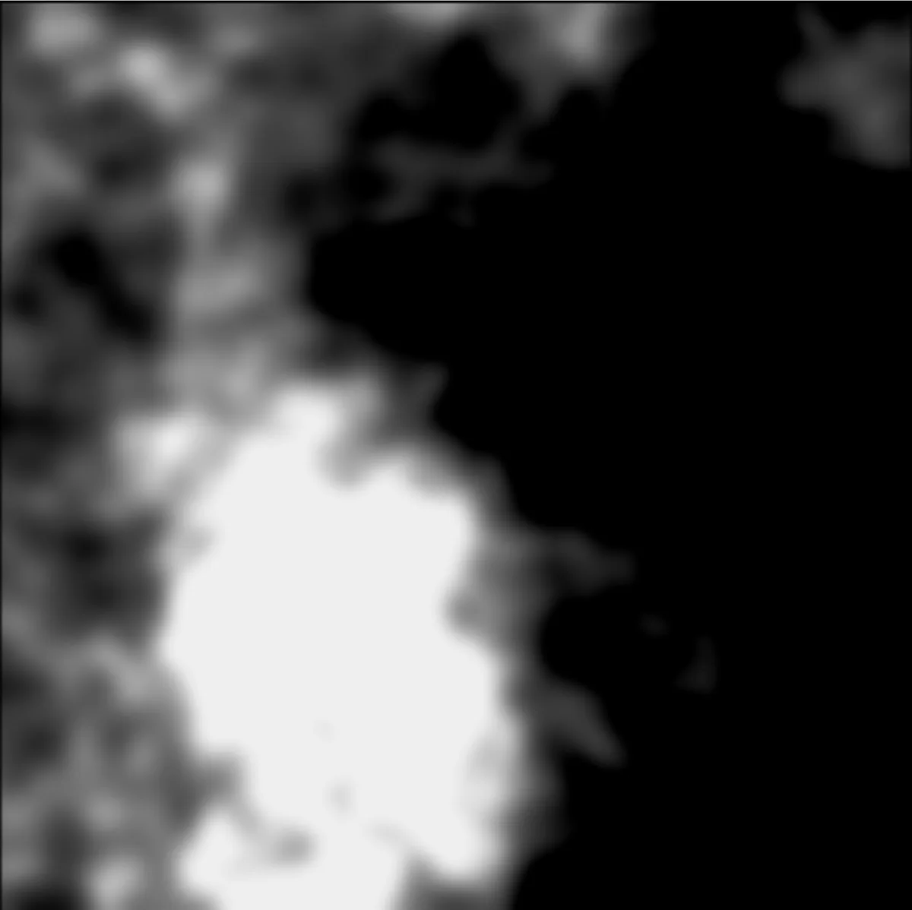

What Remains
in Signal?
What becomes visible to a machine is not necessarily what appears most visible to human perception.
The work begins by removing the camera as a direct image source. Human presence is no longer approached through a visible body.
Bluetooth Low Energy traces collected from everyday environments become the material through which presence is registered.
What is visualized is not a person, but a condition of detectability: a machine-defined field shaped by signal density, strength, proximity and instability.
The same idea of human presence produces different machine-readable fields across different environments.



Raspberry Pi Pico W · Bluetooth Low Energy field recording · CSV data · TouchDesigner · signal density / RSSI mapping · generative image processing